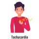

Palpitation
Rx
1-Tab Propranolol 10mg bd
Or Tab Metoprolol 50mg 1/2tab. bd
و ارجاع به متخصص قلب جهت بررسی بیشتر مدنظر داشته باشین.
Types of tachycardia
Narrow complex tachycardias
Regular
Sinus tachycardia▪️
Atrial tachycardia▪️
Atrial flutter▪️
Supraventricular tachycardia▪️
AVNRT▪️
Orthodromic AVRT▪️
Narrow complex VT (fascicular tachycardia)▪️
Irregular
Tachycardia with PACs, PJCs, PVCs▪️
Atrial fibrillation▪️
Atrial flutter with variable block▪️
Atrial tachycardia with variable block▪️
Multifocal atrial tachycardia▪️
Paroxysmal atrial tachycardia▪️
Digoxin toxicity▪️
Wide complex tachycardias
Regular
Monomorphic VT▪️
Ventricular flutter▪️
Antidromic AVRT▪️
Pacemaker tachycardia▪️
Accelerated idioventricular rhythm ▪️
Sodium channel blocker toxicity (e.g. tricyclic antidepressants, cocaine)▪️
Hyperkalemia▪️
Post-electrical cardioversion▪️
Ischaemia▪️
Regular tachycardia with aberrancy, bundle branch block or pre-excitation syndromes▪️
Irregular
Polymorphic VT (torsades de pointes)▪️
Irregular VT▪️
Ventricular fibrillation▪️
Irregular tachycardia with aberrancy, bundle branch block or pre-excitation syndromes▪️
Atrial fibrillation or flutter with pre-excitation syndromes▪️
تصویری برای این نسخه موجود نیست.